Proeflapje, garen en teller
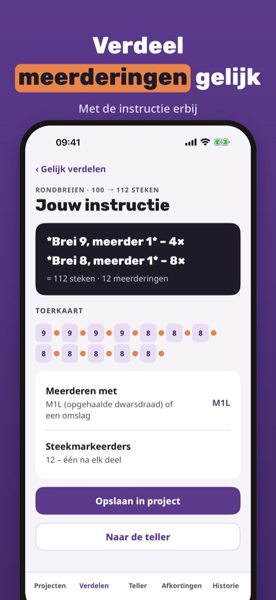
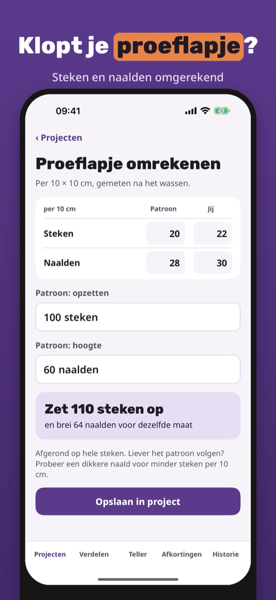
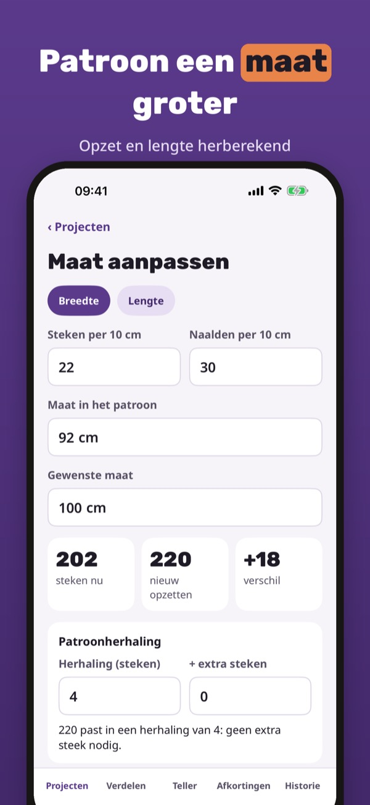
Breireken is de rekenhulp voor breiers: gelijk verdelen, proeflapje omrekenen, maat aanpassen, garen schatten en toeren tellen.
Gelijk verdelen, de afkortingen en 1 project gebruik je zonder aankoop. De volledige versie is een eenmalige aankoop voor proeflapje, maat aanpassen, garen, toerenteller, onbeperkt projecten en historie. Geen abonnement.
Breireken is een rekenhulp. Controleer de uitkomst altijd met je patroon en je proeflapje.
Terms of Use (EULA): https://www.apple.com/legal/internet-services/itunes/dev/stdeula/
Privacy: https://baytechbv.github.io/privacy/breireken-eu/
Lisää ja kavenna tasaisesti
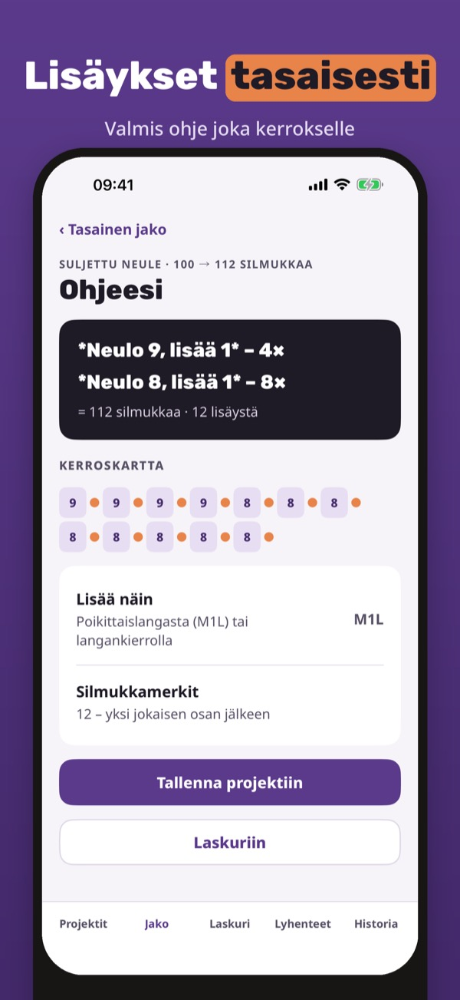
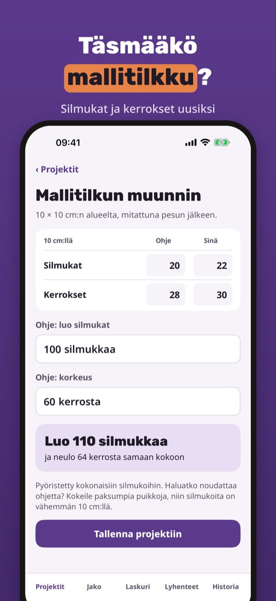
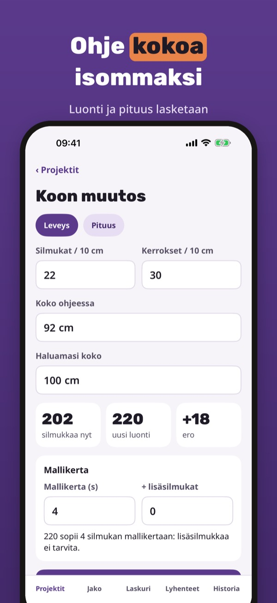
Silmukkalaskuri on neulojan laskin: tasainen jako, mallitilkun muunnin, koon muutos, langan menekki ja kerroslaskuri.
Tasaista jakoa, lyhenteitä ja yhtä projektia voi käyttää ilman ostoa. Täysi versio on kertaosto: mallitilkku, koon muutos, lanka, kerroslaskuri, rajattomasti projekteja ja historia. Ei tilausta.
Silmukkalaskuri on laskuapu. Tarkista tulos aina neuleohjetta ja mallitilkkua vasten.
Terms of Use (EULA): https://www.apple.com/legal/internet-services/itunes/dev/stdeula/
Privacy: https://baytechbv.github.io/privacy/breireken-eu/
Øk og fell jevnt fordelt
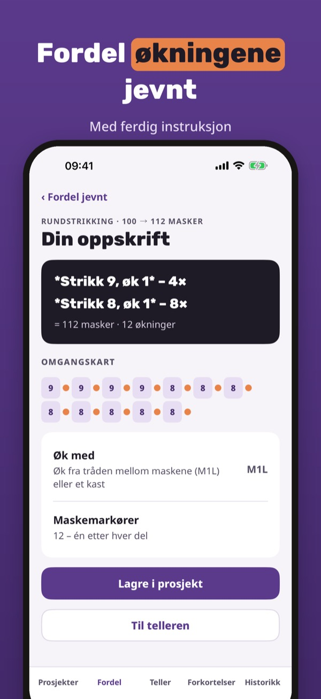
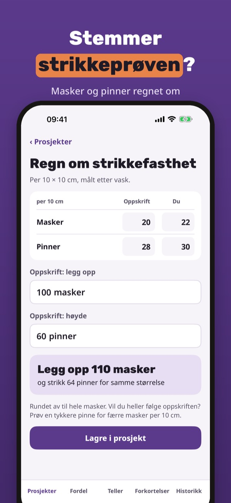
Breireken er regnehjelpen for strikkere: jevn fordeling, strikkefasthet, ny størrelse, garnmengde og omgangsteller.
Jevn fordeling, forkortelsene og 1 prosjekt kan brukes uten kjøp. Fullversjonen er et engangskjøp for strikkefasthet, ny størrelse, garn, teller, ubegrenset prosjekter og historikk. Ingen abonnement.
Breireken er en regnehjelp. Sjekk alltid resultatet mot oppskriften og strikkeprøven.
Terms of Use (EULA): https://www.apple.com/legal/internet-services/itunes/dev/stdeula/
Privacy: https://baytechbv.github.io/privacy/breireken-eu/
Tag ud og ind jævnt fordelt
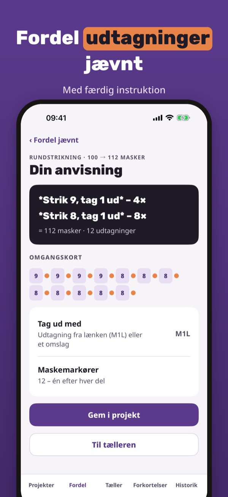
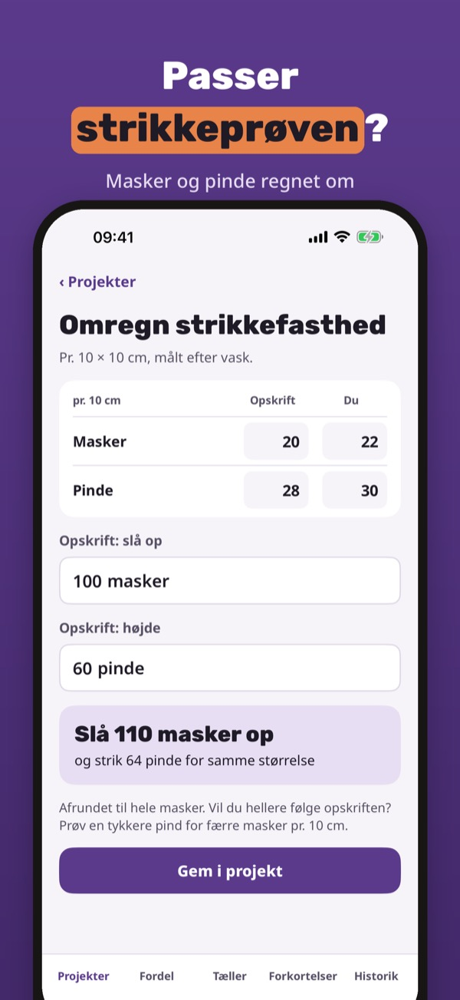
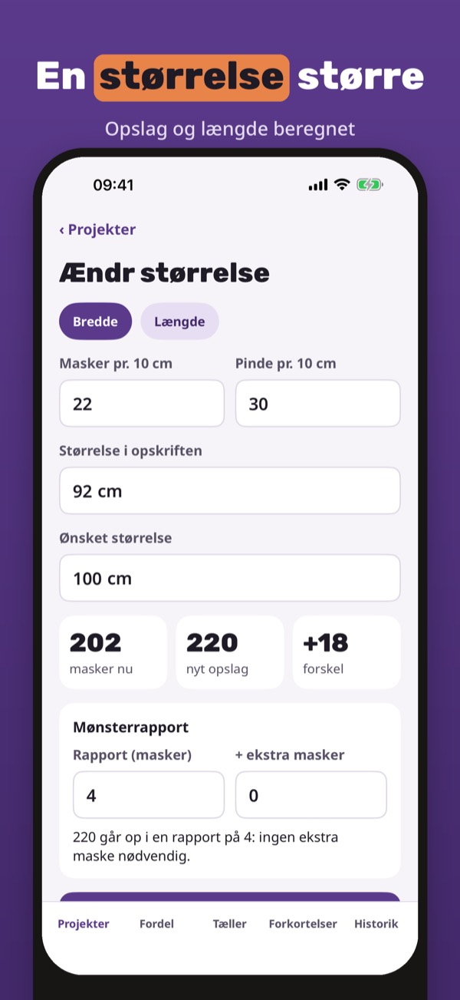
Breireken er regnehjælpen til strikkere: jævn fordeling, strikkefasthed, ny størrelse, garnforbrug og omgangstæller.
Jævn fordeling, forkortelserne og 1 projekt kan bruges uden køb. Den fulde version er et engangskøb til strikkefasthed, ny størrelse, garn, tæller, ubegrænset projekter og historik. Intet abonnement.
Breireken er en regnehjælp. Tjek altid resultatet mod opskriften og strikkeprøven.
Terms of Use (EULA): https://www.apple.com/legal/internet-services/itunes/dev/stdeula/
Privacy: https://baytechbv.github.io/privacy/breireken-eu/
Öka och minska jämnt fördelat
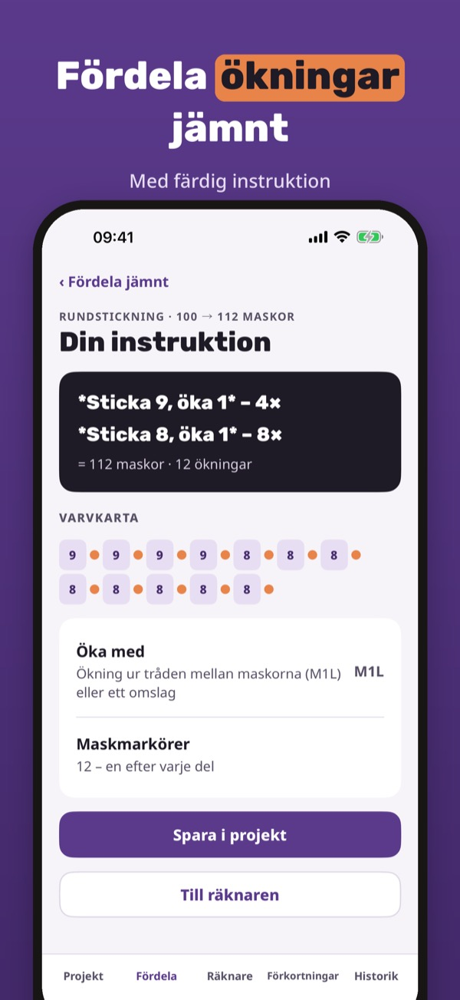
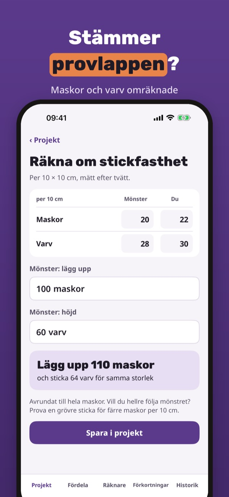
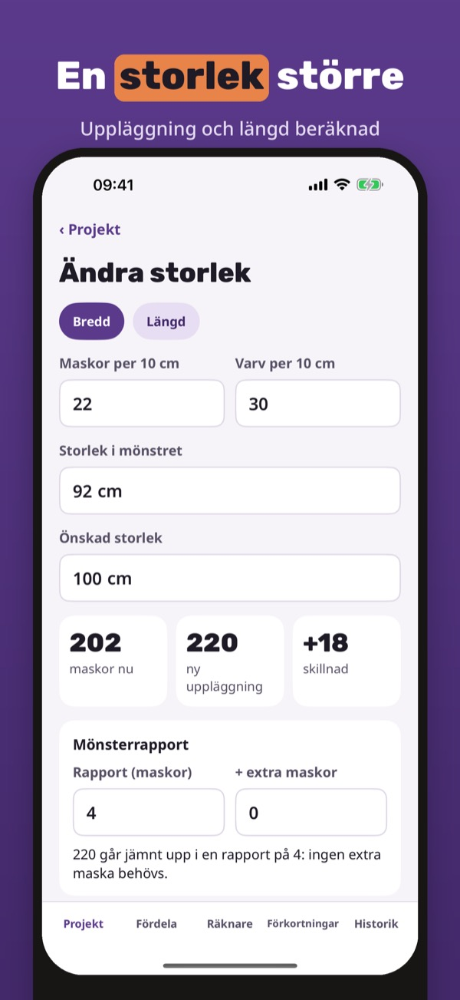
Breireken är räknehjälpen för stickare: jämn fördelning, stickfasthet, ny storlek, garnåtgång och varvräknare.
Jämn fördelning, förkortningarna och 1 projekt kan användas utan köp. Fullversionen är ett engångsköp för stickfasthet, ny storlek, garn, räknare, obegränsat antal projekt och historik. Ingen prenumeration.
Breireken är en räknehjälp. Kontrollera alltid resultatet mot mönstret och provlappen.
Terms of Use (EULA): https://www.apple.com/legal/internet-services/itunes/dev/stdeula/
Privacy: https://baytechbv.github.io/privacy/breireken-eu/
Zu- und Abnahmen gleichmäßig
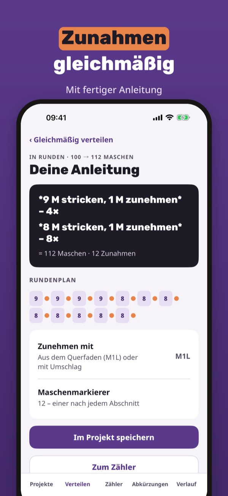
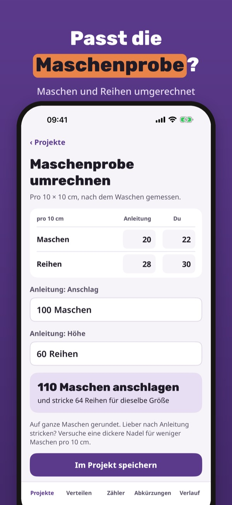
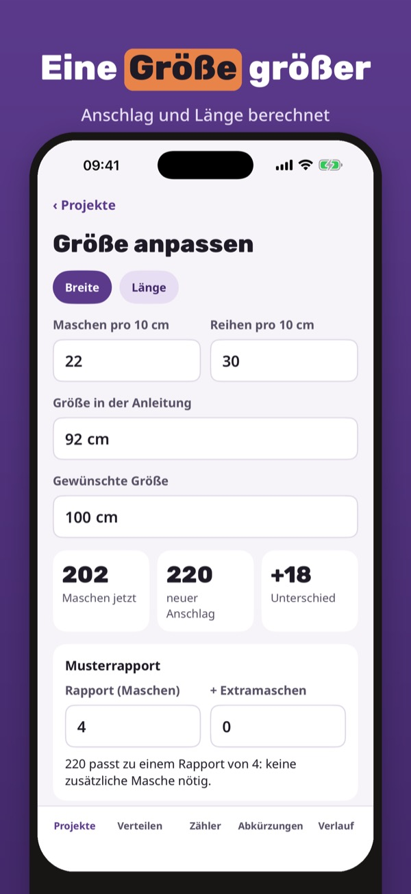
Maschenklar ist die Rechenhilfe fürs Stricken: gleichmäßig verteilen, Maschenprobe umrechnen, Größe ändern, Garnbedarf schätzen, Reihen zählen.
Gleichmäßig verteilen, die Abkürzungen und 1 Projekt nutzt du ohne Kauf. Die Vollversion ist ein Einmalkauf für Maschenprobe, Größe ändern, Garn, Zähler, unbegrenzt Projekte und Verlauf. Kein Abo.
Maschenklar ist eine Rechenhilfe. Prüfe das Ergebnis immer mit deiner Anleitung und deiner Maschenprobe.
Terms of Use (EULA): https://www.apple.com/legal/internet-services/itunes/dev/stdeula/
Privacy: https://baytechbv.github.io/privacy/breireken-eu/